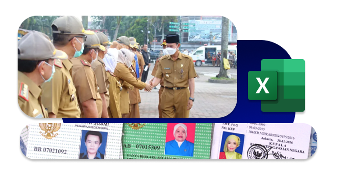

Mutasi
Divisi Mutasi di BKN bertugas mengelola proses perpindahan atau penempatan Aparatur Sipil Negara (ASN), termasuk promosi, rotasi, dan mutasi antardaerah atau instansi, sesuai dengan peraturan yang berlaku.
Kami bertugas dalam melakukan pengagendaan KARIS dan KARSU